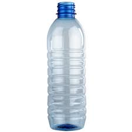
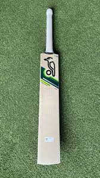
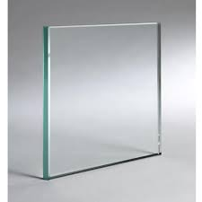

Google lens vs Mobilenet
Test 1.

Google Lens is more acccurate.
Test 2.

Google Lens is accurate.
Test 3.

Google Lens is accurate.
Test 4.

Google Lens is accurate.
Test 5.

Google Lens is accurate.
I have tested 5 objects.
Google Lens is more accurate than Mobilenet.
Made by Mohit Mishra